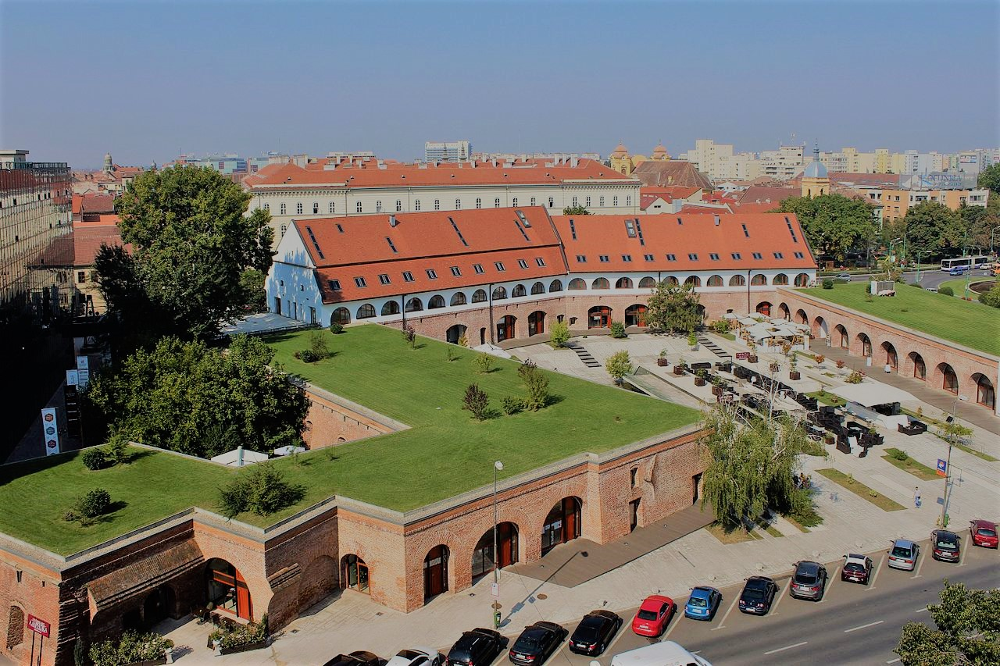

History
A short history of Timisoara

Timisoara is the largest and most important city in the Romanian Banat.
Archaeological discoveries prove that the area where Timișoara is located today has been inhabited since ancient times. The first identifiable civilization in this area were the Dacians who left traces of their past.
The Ottomans surrendered the city to the Habsburg Imperial armies led by Prince Eugene of Savoy on 12 October 1716 during the Austro-Turkish War of 1716–18
In December 1989 a popular uprising began in Timișoara against the Communist regime of Nicolae Ceauşescu.
Timișoara was declared the first Free Town on 20 December 1989.
In September 2016, Timișoara was selected as the European Capital of Culture for 2021.
Archaeological discoveries prove that the area where Timișoara is located today has been inhabited since ancient times. The first identifiable civilization in this area were the Dacians who left traces of their past.
The Ottomans surrendered the city to the Habsburg Imperial armies led by Prince Eugene of Savoy on 12 October 1716 during the Austro-Turkish War of 1716–18
In December 1989 a popular uprising began in Timișoara against the Communist regime of Nicolae Ceauşescu.
Timișoara was declared the first Free Town on 20 December 1989.
In September 2016, Timișoara was selected as the European Capital of Culture for 2021.